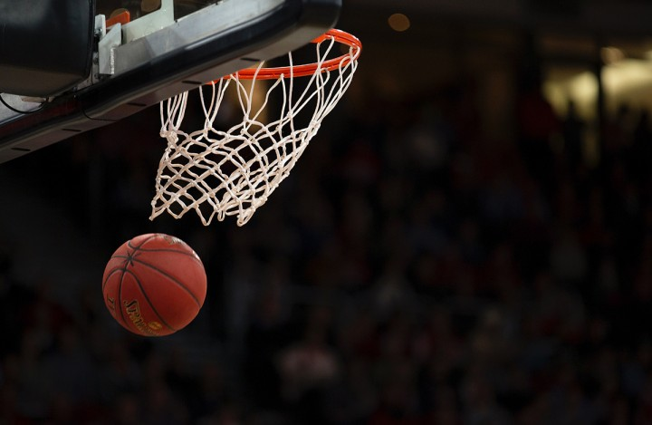
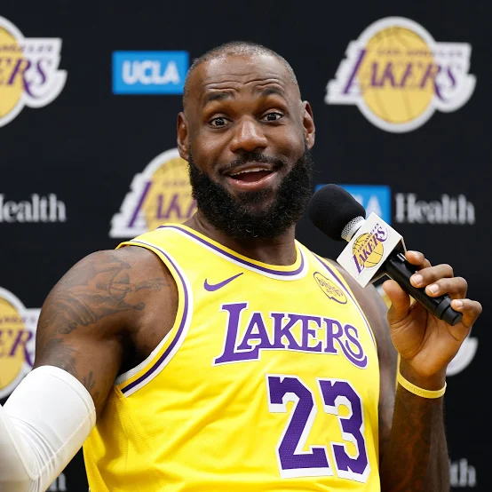
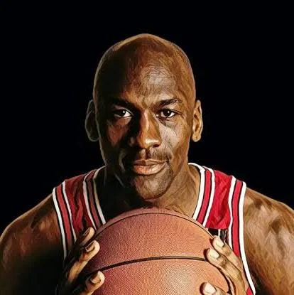
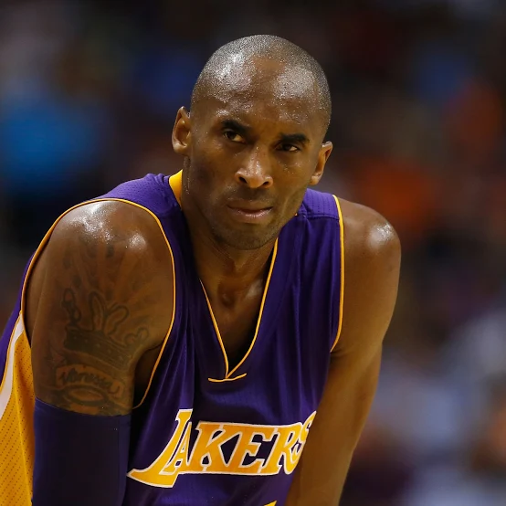

Historia del Basquet

El baloncesto fue inventado en 1891 por James Naismith, un instructor de educación física en Springfield, Massachusetts quien creó un juego de interior para sus alumnos. Originalmente, se jugaba con una pelota de fútbol y dos cestas de duraznos, pero el deporte se popularizó rápidamente y evolucionó, dando lugar a la creación de la FIBA en 1932, la inclusión en los Juegos Olímpicos de 1936, y la formación de la NBA en 1949.
Reglas Básicas del Basquet

- El partido se juega entre dos equipos de 5 jugadores cada uno.
- Gana el equipo que marque más canastas en 30 minutos.
- Las faltas pueden derivar en tiros directos o libres.
- El árbitro es la máxima autoridad.
- Está prohibido empujar, sujetar u obstaculizar a un oponente.
Posiciones en el Campo

- Guardias: Guard-forward.
- Guardias: Swingman.
- Atacantes: Small Forward.
- Atacantes: Point Forward.
Jugadores de Basquet Reconocidos


